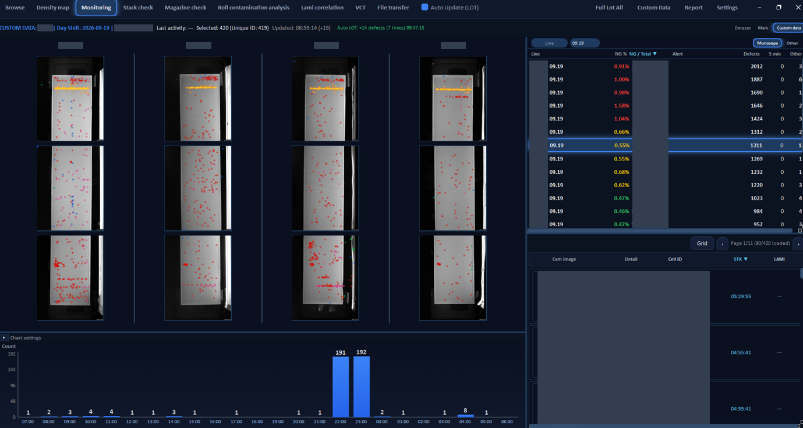
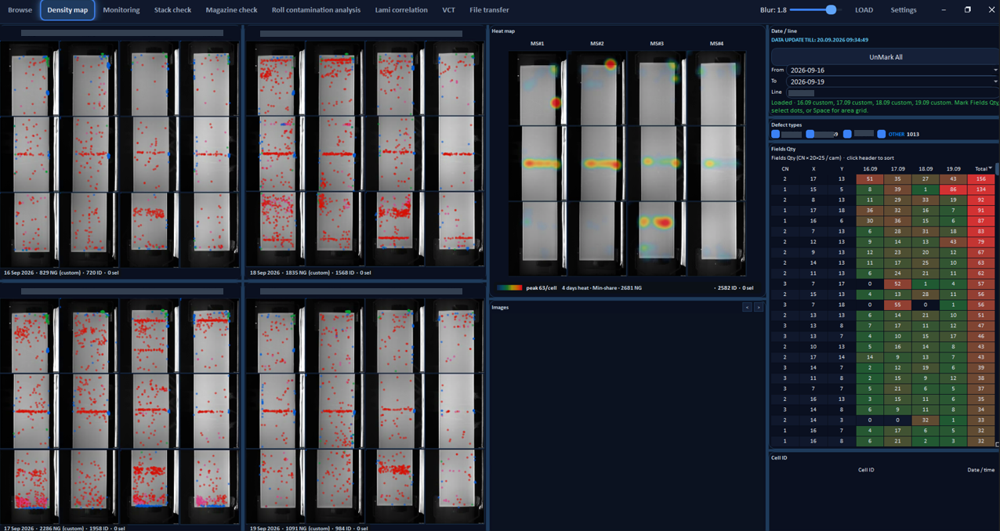
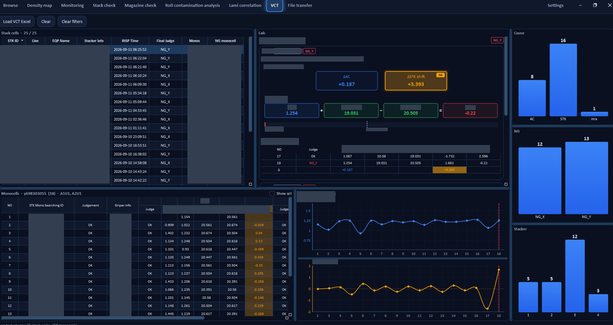
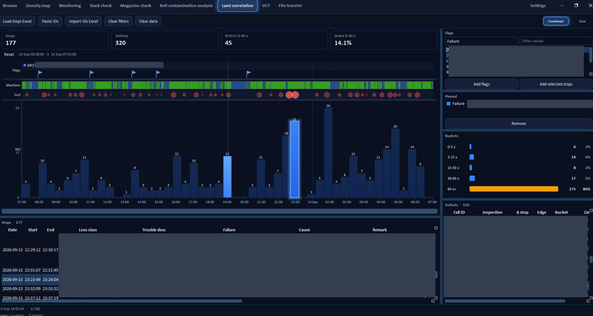
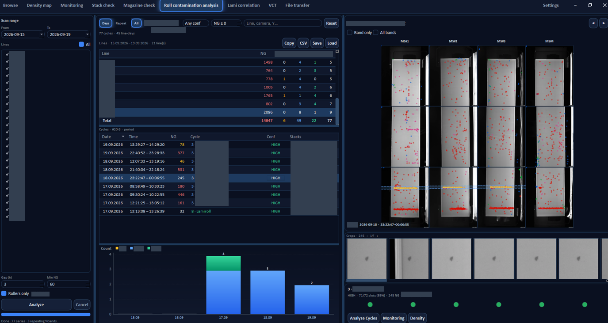

Measure
Rates next to volume, so a busy period is not mistaken for a worse one. Alerts sit on the same screen as the trend.
A desktop workstation I built for visual defect analysis: live dashboards, maps on the inspected surface, timelines and drill-down from a summary to a single case. The screens below are a portfolio sample with company-specific labels and figures removed.
Rates next to volume, so a busy period is not mistaken for a worse one. Alerts sit on the same screen as the trend.
Points and heatmaps on the actual view of the object, so a spike becomes a cluster, a band, or noise.
Events, flags and measurements on one clock. You can ask whether two things moved together, or only looked related.

A working view for “what is happening now”: a ranked list, a chart over the day, and example images on the same screen. The path from a highlighted row to a concrete case stays short.

Side-by-side maps and a heatmap over several days. Recurring zones stand out from one-off scatter. The grid is a compact crosstab (zone × day) — the same idea as a pivot, drawn on geometry.

When a result is a formula, the terms stay on screen: inputs, output, limit. Bars and line charts sit beside the table so you can see a step-change versus noise without exporting first.

Flags, event dots and volume bars share a timeline. Duration buckets turn a long log into a distribution: most of the loss in many short events, or in a few long ones.

Windows in time are grouped and typed, then checked on the map. If a pattern returns, it is a candidate for a process cycle — not a pile of independent rows.